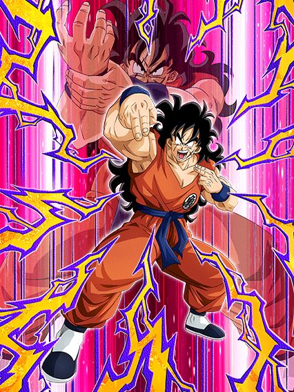
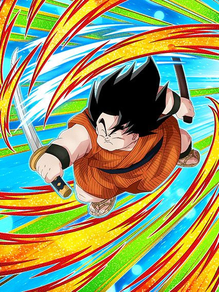

Uma celebração.
A celebração meio paia entre o dia dos saiyajins e a golden week, então geral não foi tão louco pelo yamcha pq ele é bom mas todo mundo sabia q oq viesse na golden week valeria muito mais.

Nós realmente vivemos na realidade rara onde o yamcha é um card top 10.
Esse card é interessante, primeiramente ele q trouxe pro jogo a categoria q se tornaria uma das melhores, warriors raised on earth (não dokkan global, o goku não nasceu na terra) e tmb trouxe um banner unit incrível.
Esse card se resume a desviar e dar o máximo de supers antes que a intro dele acabe, já q ele consegue dar muito dano com chance de crítico já no kit e 50% de desvio, junto com uma active muito braba e decente, além de ele buildar com 5 ataques normais, sem precisar ser super, diferente de um certo outro card sem transformação..

O card q revolucionou a indústria de cards secundários.
Se eu não me engano o primeiro card suporte que realmente foi feito pra ser um suporte, já q ele literalmente ganha metade do kit estando no slot 3, dá suporte por 2 turnos, tem 70% de desvio e tem a mecânica hilária de sobreviver a qualquer ataque com 1 de vida, oq pode te salvar (ou não xd)
Esse rapaz tem uma active extremamente quebrada e fora do comum, onde ele te dá uma semente dos deuses.
Não parece tão impressionante até vc lembrar que a semente dos deuses no jogo cura 100% da vida e remove debuffs q o boss possa dar em vc, e ele faz isso de graça, sem contar como item caso vc seja fanático por No-itens das fases difíceis ou esteja levando um whis de item como qualquer ser humano normal.
")
Oq esse eza tá fazendo aqui mesmo?
Tirando o fato de não ter absolutamente nada haver com o yamcha e etc, foi um eza decente que consegue até funcionar, tem um dano maneiro, troca orbs e até que a defesa é boa, mas no geral as maiores utilidades dele é ser lider de extreme int pra battlefield e ele serve no time do cooler LR pra missões de red zone pra usar todos os tipos, então é, ele tem seus usos, só são poucos.
")
Outro LR do battlefield que demorou demais pra chegar.
Esse cara é extremamente fraco na forma base, ele só tem 200% de ATK e DEF e um suportezinho pra todo mundo, mas isso obviamente não é o bastante, então é, procure transformar o mais rápido possível
E no caso.. tal transformação acontece assim q vc cair abaixo de 50% de HP
(por sinal, eu acho "legal" comentar que esse cara na base tem um dos piores linksets do jogo, meu amigo, que card bizarro..)
É ele, ele é o majin power.
Transformado esse cara é muito bom até, ele tem 120% de ATK e DEF, e sendo o único majin power no time, ganha mais 120%
Caso tenha outros majin power, ele vira um suporte de 40% de ATK e DEF, bem interessante já q ele tmb é orb changer
No final das contas, nada mal ein, uma pena q é chatão farmar esse tipo de card..
 A")
Acharam
Acharam os super strike decentes.
Esses dois tem kits similares e são até bem decentes, eles são nukers levemente zuados, já que eles ganham 30% de ATK e DEF por orb, mas a cada turno esses 30% vão abaixando pra 20 (no caso, o gotenks gordo demora mais que o magro, mas ehh dá na mesma)
A maior diferença dos dois é q o gotenks gordo precisa específicamente de orbs phy pra ganhar mais DEF, mais ATK e mais chance de crítico, enquanto o magro pode ser qualquer orb
No geral, até que não são ruins não tá, eles podem ajudar em eventos (específicos, sim, mas ajudam), além de linkarem bem um com o outro.

Os primeiros ezas desse modo horrível, e provavelmente os melhores
Começando pelo Piccolo, ele não dá dano mas é um tank muito bom, nem parece um F2P
Infelizmente ele é limitado a ter um gohanzinho no turno, felizmente no aniversário tem o gohanzinho carnival, literalmente salvou esse cara
O Goku ssj é outro brabo, suporte de 50% de ATK e DEF mais 7% de crítico pra legendary existence, q é uma categoria bem morta mas não inútil
O Bardock provavelmente é o mais simplão dos 5, já q ele não faz muita coisa além de ser um suporte de 50% de ATK e DEF pra todos AGL e STR
O Gokuzinho é bem triste infelizmente, ele stacka ATK e DEF mas infelizmente precisa de vários inimigos pra ter passiva, aí é complicado
E claro, deixei o melhor pro final.. o Gohan ssj2
O cara é simplesmente um suporte de 50% pra TEQ, AGL e PHY, enquanto OBRIGATORIAMENTE precisa estar no slot 3 e ainda stacka DEF, oq mais pode se pedir pra um suporte? Amo esse cara.
Você chegou ao fim dessa página!
Obrigado por ler tudo, e fica a vontade pra ver outras